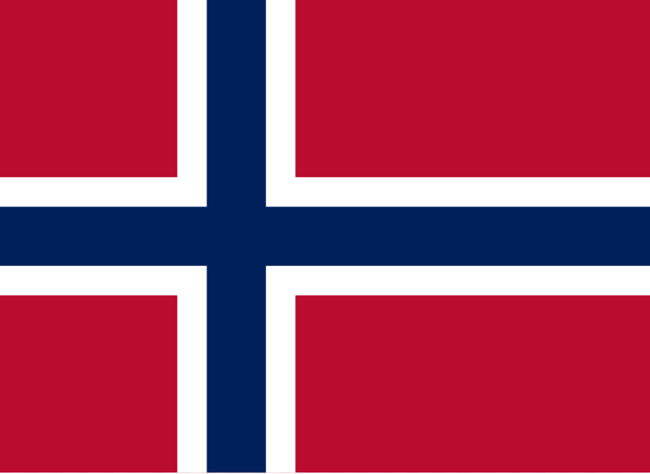
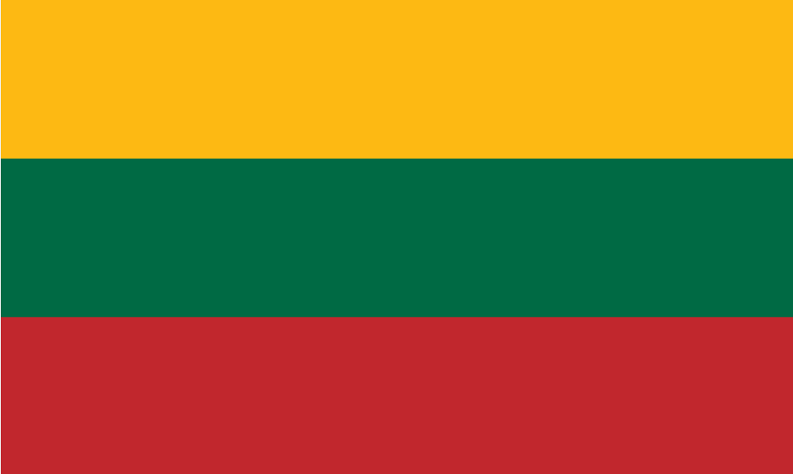
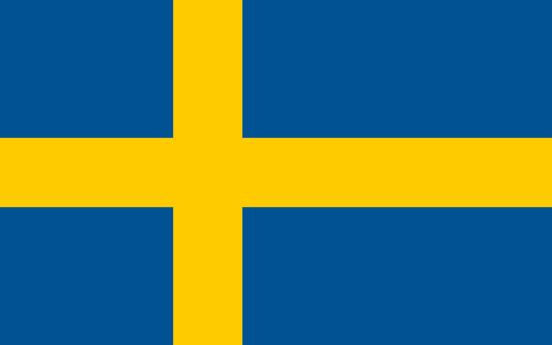

Estonia
Estonia's blue, black, and white tricolor is unique in that its colors perfectly reflect the Estonian winter landscape.

Norway
Within the flag of Norway, one can discern the flags of six other nations: Indonesia, Poland, Finland, France, the Netherlands, and Thailand.

Lithuania
The yellow, green, and red colors of the Lithuanian tricolor symbolize the country's nature and values.

Sweden
According to legend, the yellow cross on the blue background of the Swedish flag appeared in the sky to King Eric IX (Saint Eric) as a golden sign during the First Swedish Crusade in 1157.